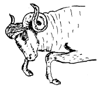
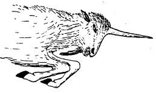
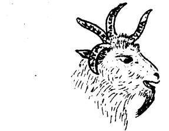
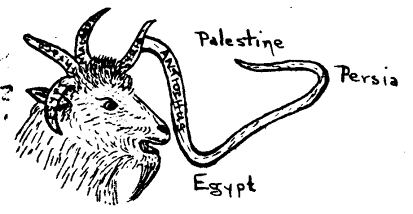
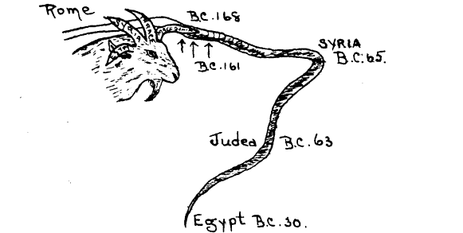

The white elephant of Seventh-day Adventism—The 2,300 days of Daniel 8:14
By R. Vowless
Printed by P. F. Burrows Ltd. Eliot Street, New Plymouth. 8301. Published 1933
Note by Editor: This study will show the true Biblical fulfillment of Daniel chapter 8. Vowless, shows that the 2300 days have no future fulfillment to 1844, as claimed by Ellen G. White and the Seventh-day Adventist Church. This is an excellent study to those that have been misled on the true meaning of this prophecy by the Seventh-day Adventist Church. I would like for those that read this study to read and re-read Daniel chapter 8, and get a good understanding of what the beasts represent and that it does not have a future fulfillment in 1844 and has nothing to do with chapter 9 of Daniel.
The real issue is that Daniel 8:14 is misinterpreted and misapplied by Adventists. The factual context is the little horn is attacking the saints and polluting the sanctuary but Adventist through their "Sanctuary Doctrine" have the saints polluting the sanctuary and God judging not the little horn or unbelievers but the saints of all things. The result is SDA's feeling very insecure with a dysfunctional view of their God to live with. If it wasn’t enough that Satan is accusing us, God is investigating us to judge us.
Many Seventh Day Adventists have wondered and asked me why, their pastors would not give me a hearing when they knew of my resignation from their church through my not being able to accept their teachings of the 2,300 days. Some of the members have asked their pastors in their churches why they have not given me a church hearing, that, if they were right upon the prophecy they should correct me once and for all, and if I were right, then, it was time they knew it; but those pastors would never consent to such a hearing nor even to a private hearing with me. However, when those conscientious seekers for truth read this study, I trust that with fervent prayer they will seek and study carefully, and when they come to see the awful errors of the teachings of their elders, may the Lord convict them, as He has convicted me to enlighten others of the truth, and thus escape from the entangled web of false doctrine.
We read in the eighth chapter of Daniel of a vision to this effect: —
"And I saw in a vision, and it came to pass, when I saw, that I was at Shushan in the palace, which is in the province of Elam; and I saw in a vision, and I was by the river Ulai.
"Then I lifted up mine eyes, and saw, and behold, there stood before the river a ram which had two horns: and the two horns were high; but one was higher than the other, and the higher came up last.
"I saw the ram pushing westward, and northward, and southward; so that no beasts might stand before him, neither was there any that could deliver out of his hand; but he did according to his will, and became great.
"And as I was considering, behold, an he-goat came from the west on the face of the whole earth, and touched not the ground: and the goat had a notable horn between his eyes. And he came to the ram that had the two horns, which I had seen standing before the river, ran unto him in the fury of his power.
"And I saw him come close unto the ram, and he was moved with choler against him, and smote the ram, and brake his two horns: and there was no power in the ram to stand before him, but he cast him down to the ground, and stamped upon him: and there was none that could deliver the ram out of his hand.
"Therefore the he-goat waxed very great: and when he was strong, the great horn was broken; and for it came up four notable ones toward the four winds of heaven.
"And out of one of them came forth a little horn, which waxed exceeding great, toward the south, and toward the east, and toward the pleasant land.
"And it waxed great, even to the host of heaven; and it cast down some of the host and of the stars to the ground, and stamped upon them.
"Yea, he magnified himself even to the prince of the host, and by him the daily sacrifice was taken away, and the place of his sanctuary was cast down.
"And an host was given him against the daily sacrifice by reason of transgression, and it cast down the truth to the ground; and it practiced and prospered.
"Then I heard one saint speaking, and another saint said unto that certain saint which spake: How long shall be the vision concerning the daily sacrifice, and the transgression of desolation, to give both the sanctuary and the host to be trodden under foot?
"And he said unto me: Unto two thousand and three hundred days then, shall the sanctuary be cleansed."— Daniel 8:2-14.
There is no prophecy in the Bible that is given to man without a key to open it and understand the meaning thereof. This is one prophecy of few that is explained by the heavenly messenger himself, therefore we have a vision here and its heavenly interpretation all given in the one chapter.
In all symbolic prophecies we find beasts representing universal kingdoms or nations of some great international influence. And horns are given to represent kings of smaller nations. And we find this so very plainly given in this chapter that nothing is left for conjecture or doubt, for in the heavenly interpretation we read as follows; —
"The ram which thou sawest having two horns are the kings of Media and Persia. And the rough goat is the king of Grecia, and the great horn that is between his eyes is the first king.
"Now that being broken, whereas four stood up for it, four kingdoms shall stand up out of the nation, but not in his power.
"And in the latter time of their kingdom, when the transgressors are come to the full a king of fierce countenance, and understanding dark sentences, shall stand up.
"And his power shall be mighty, but riot by his own power: and he shall destroy wonderfully, and shall prosper, and practice, and shall destroy the mighty and the holy people.
"And through his policy also he shall cause craft to prosper in his hand, and he shall magnify himself in his heart, and by peace shall destroy many: he shall also stand up against the prince of princes; but he shall be broken without hand." Daniel 8:20-25.

Daniel is here shown two universal kingdoms that were to follow in the wake of Babylon.
Firstly Media Persia who was to be followed by Grecia. These two universal kingdoms are the only ones given in this chapter for there are no other beasts brought into it and there is no intimation given by the angel of any other, therefore Rome, the greatest of all universal kingdoms, is left entirely out of this prophecy and has no part in it as we will finally see.

If it was to be understood that Rome represented "the little horn," then, we would have to depart from the scriptural interpretations of symbols given in the previous chapter, and in departing from scriptural interpretations of symbols we would finally find ourselves enveloped in a mighty tangled web just into such a web as some Bible students are finding themselves at the present time.
In the seventh chapter the heavenly interpretation is given that beasts represent universal kingdoms, and horns merely lesser kingdoms or kings; and to that interpretation we must keep to, if we are to be true Bible students.
If Rome, the greatest of all universal kingdoms, was to have had a part in this chapter, it would undoubtedly be represented by another beast, but there is no other beast brought to view, therefore, there is only one logical conclusion to come to and that is whatever is contained in this prophecy must be in relation to the two beasts or kingdoms brought to view in this chapter and no other. When heaven's messengers themselves distinctly say that a beast represents a kingdom, and horns are kings of those kingdoms — how ridiculous is it beyond all reason for some Bible students to turn around and say that the beasts in this prophecy represent the kingdoms named in this prophecy, but the "little horn" was to represent Rome, the greatest of all kingdoms, especially when Daniel is told that the four horns are four kings coming out of the kingdom of Grecia, and the "little horn" is another king coming out of one of those four.
THE TWO KINGDOMS OF THE PROPHECY
Darius, who led the Medes and Persians, came down and took the kingdom from Babylon in the year B.C- 538; and through conquests, the ram, or Media Persia, conquered and reigned over all the then known world from India to Ethiopia until Grecia, led by Alexander the Great, thoroughly defeated Medo-Persia in the year B.C. 331. Thus did the he-goat smote the ram and brake his two horns, and by the year B.C. 328 he had conquered all the then known world from Egypt to India.
After twelve years of conquests and tyranny Alexander died a drunkard's death leaving no successor to the throne. Thus did the great horn become broken. Much jealousy arose between those who were seeking for the throne, causing riots and bloodshed until Grecia was finally divided into four kingdoms: Thrace, under Lysimichus; Egypt, under Ptolemy Soter .Macedonia, under Casander; and Syria, under Seleucus, were established in the year B.C. 301. Thus did four horns come up in place of the notable horn which was broken.
The beast or he-goat represented the kingdom of Grecia, and the great horn represented the first king (Daniel- 8: 20). "Now that horn being broken whereas four stood up out of the nation, but not in his power." (Daniel 8: 22). Four horns or kings stood up out of the nation, out of Grecia. It is still the same he-goat and the four kingdoms that arose were four divisions of that same he-goat.

The Four Horns
Thrace, Egypt, Macedonia,
and Syria
Continuing the prophecy further we read: "And out of one of them came forth a little horn which waxed exceeding great, toward the South, toward the east, and toward the pleasant land." Daniel 8: 9.
The " little horn" came out of where? The prophecy says: "OUT OF ONE OF THEM," meaning out of one of the four horns. And what were the four horns referred to? There is no denying that the horns referred to were the four horns or kingdoms that arose out of the divisions of the he-goat, namely, Thrace, Egypt, Macedonia, and Syria.
From these plain facts of the prophecy no unbiased Bible student would deny that this "little horn" came out from one of the four divisions or horns named, thus a little kingdom was to arise out of one of these four which were still parts of the he-goat, Grecia. Therefore, the "little horn " or king, or kingdom, would STILL BE A PART OF THE ORIGINAL HE-GOAT OR GRECIA.
I have before me the standard works of Seventh Day Adventists including "Daniel and Revelation," by Uriah Smith. Here, this writer goes to pages of explanation in an effort to try to prove that the "little horn" represents Rome; which has been shown is contrary to every rule of interpretation of the prophecy. He works hard in trying to show that because Rome conquered Macedonia which is one of the kingdoms that came out of Alexander's kingdom, that Rome therefore, came out of Macedonia. It would be just as right to say that because France, under Napoleon, conquered Germany, therefore, France came out of Germany. Or later, that Germany came out of Alsace-Lorraine because she conquered both provinces. For one to write pages of explanation endeavoring to make it appear that Rome came out of Macedonia because she conquered that country shows to what limits men will go to bolster up some creed that they believe in. Any school child will tell you that Rome came out of Italy and from nowhere else.
Those Bible students of prophecy who are willing to put aside all creeds and who are willing to be led by God's Holy Word, should plainly see the truth and so correct some of the fatal errors of Seventh Day Adventists.
Now turning to the Book of Maccabees we read the following:
Now it came to pass after that Alexander, the son of Philip the Macedonian, who first reigned in Greece, coming out of the land of Cethim, had overthrown Darius, king of the Persians and Medes:
"He fought many battles and took the strongholds of all and slew the kings of the earth.
"And he went through even to the ends of the earth and took the spoils of many nations. And the earth was quiet before him.
"And he gathered a power and a very strong army: and his heart was exalted and lifted up.
"And he subdued countries of nations and princes; and they became tributaries to him.
"And after these things, he fell down upon his bed and knew that he should die.
"And he called his servants the nobles that were brought up with him from his youth: and he divided his kingdom among them while he was yet alive.
"And Alexander reigned twelve years: and he died.
"And his servants made themselves kings everyone in his place.
"And they all put crowns upon themselves after his death, and their sons after them many years : and evils were multiplied in the earth.
"And there came out of them a wicked root, Antiochus, the Illustrious, the son of king Antiochus, who had been a hostage at Rome: and he reigned in the hundred and thirty-seventh year of the kingdom of the Greeks." 1Maccabees 1:1-11.
Josephus has the following to say:
"And that from them (the four horns of the goat) there should arise a certain king that should overcome our nation, and should take away our political government and should spoil the temple, and forbid the sacrifice to be offered for three years' time…. And indeed it came so to pass that our nation suffered these things under Antiochus Epiphanes, according to Daniel's vision. " —Antiquities, Book 10; chapter XI.
I know that Seventh Day Adventists will say that neither the book of Maccabees nor Josephus is inspired. I will grant that; but no one will deny that Maccabees is authentic history.
Josephus says of himself, "I have translated the Antiquities out of our sacred books, which I easily could do, since I was a Priest by birth, and have studied that philosophy which is contained in those writings."......... Moreover, when the city of Jerusalem was taken by force, Titus Caesar persuaded me frequently to take whatever I would of the ruins of my country, and said that he gave me leave so to do; but when my country was destroyed, I thought nothing else to be of any value which I could take and keep as a comfort under my calamities; so I made this request to Titus, that, my family might have their liberty; I had also the holy books by Titus's concession."— Life of Josephus, written by himself. Whiston's Josephus, page 35- It is also written that the "holy books" referred to were the whole of the Old Testament.
So Josephus not only had access to the Scriptures as a priest but actually owned them at the destruction of Jerusalem. And so, Josephus is recognized as the greatest Jewish historian that ever lived.
Uriah Smith in his "Daniel and Revelation" quotes from Josephus and from Maccabees often enough when it suits him, as also did Mrs. White copy nearly all the apocrypha into her books.
Now let us come back to our prophecy of the "little horn."
Rollin's Ancient Historyreferring to Antiochus Epiphanes being the fulfillment of the prophecy, says: "No prophecy was ever fulfilled in so clear, so perfectly and so indisputable a manner."
Talking of Antiochus Epiphanes in "Art. Seleucid Dynasty," the Encyclopedia Britannica, vol. 24, page 605, says: "…..he is doubtless the monarch described in the psuedo prophetic chapters of Daniel."
A most full account of the doings of Antiochus Epiphanes, and the cleansing of the sanctuary, in the fulfilling of the prophecy is given in Historians History of the World, vol. 2, pages 140-156.
Studying further we read: "Out of one of them came forth a "little horn" which waxed exceeding great, toward the south, and toward the east, and toward the pleasant land." Daniel 8:9.
Having discovered the "little horn," the next phrase to discover is exceeding great."
Here, Seventh Day Adventists again try to bring Rome into the prophecy this way: the ram or Media-Persia became "great," and the he-goat or Grecia became "very great" as kingdoms, but the "little horn" became "exceeding great," therefore "It" must become a greater empire than either Medo-Persia or Grecia, and as Rome was the next universal kingdom and the greatest of all kingdoms, must be the fulfilling of the prophecy of the "little horn" which waxed "exceeding great."
If we would let God's spirit guide us in the interpretation we would read the full phrase that is in question, and not cut off any of it. In doing so, we would understand that "out of one of them came forth a little horn, which waxed exceeding great TOWARD the south, TOWARD the east and TOWARD THE PLEASANT LAND," and not to be a greater kingdom than either Medo-Persia or Grecia.
"IN THE LATTER TIME OF THEIR KINGDOM"
Another stated fact of the prophecy which must not be overlooked is as follows: "And in the latter time of their kingdom, when the transgressors are come to the full a king of fierce countenance, and understanding dark sentences, shall stand up." Daniel 8: 21-22.
"In the latter time of their (four horns) kingdom."
Therefore, before the end of these four kingdoms or divisions of Grecia, and before Rome comes into history as a universal kingdom, this "little horn" was to rise. These four kingdoms out of Alexander's kingdom must be still ruling as kingdoms when this "little horn" was to come, this is a prominent fact in the prophecy.
The first of these four kings began to reign in the year B. C. 306 and continued till 65 B. C. And Antiochus Epiphanes reigned from 175 B. C. to 164 B. C. Therefore he did reign in the latter times of their kingdoms
"THE DIRECTIONS OF THE PROPHECY."
The next important expression to study is the fact that the prophecy says, "Out of one of them came forth a little horn which waxed exceeding great toward the SOUTH and toward the EAST, and toward the PLEASANT LAND." Daniel 8 9.

I have on the chart here the four horns standing out of the head of the he-goat, Alexander. The four horns take the same place as the four heads of the leopard, beast of Daniel 7:9. The four kingdoms were Egypt, Thrace, Macedonia, and Syria; and out of one them comes forth a "little horn," Antiochus Epiphanes; (in the chart I have rather a long horn with the idea of showing more plainly the direction taken in its warfare). According to the prophecy the "little horn" was to first go to the SOUTH.
"And the kingdom was established before Antiochus: and he had a mind to reign over the land of Egypt, that he might reign over two kingdoms. And he entered Egypt with a great multitude, with chariots, and elephants and horsemen and a great number of ships: and he made war against Ptolemee, king of Egypt; but Ptolemee was afraid at his presence and fled, and many were wounded unto death. And he took the strong cities in the land of Egypt and he took the spoils of the land of Egypt." Maccabees 1:17-19.
Thus did Antiochus Epiphanes wax GREAT TOWARD THE SOUTH— to Egypt in the 143rd year (of the kingdom of Grecia).
The next direction was TOWARD THE EAST. (Persia)
"And he was greatly perplexed in mind and purposed to go into Persia and to take tributes of the countries and to gather much money."
"So the king took half the army that remained and went forth from Antioch, the chief city of his kingdom, in the 147th year and he passed over the river Euphrates and went through the higher countries." Maccabees 3: 31-37. Again Antiochus fulfills the prophecy.
The last direction which is TOWARD THE PLEASANT LAND, I shall fully explain after showing another fulfillment of the prophecy which comes in here.
THE POLLUTING OF THE SANCTUARY
During a period which was to begin sometime after "his rising" and before his ultimate end it is said "And it waxed great, even to the host of heaven; and it cast down some of the host and of the stars to the ground, and tramped upon them. Yea, he magnified himself even to the prince of the host, and by him the daily sacrifice was taken away, and the place of his sanctuary was cast down. And an host was given him against the daily sacrifice by reason of transgression, and it cast down the truth to the ground, and it practiced and prospered." Daniel 8:10-12.
Certainly he could not do these things after he came to his end, therefore it must be done during his reign. We shall now study Antiochus's attitude toward the sanctuary, the host, and stars. (The host of heaven would be God's people and the stars would be the leaders of that host, such as the priests).
"And after Antiochus had ravaged Egypt in the hundred and forty-third year, he returned and went up against Israel. And he went up to Jerusalem with a great multitude. And he proudly entered into the sanctuary and took away the golden altar and the Candlestick of light and all the vessels thereof and the table of proposition (showbread) and the pouring vessels and the vials and the little mortars of gold and the vail and the crowns and the golden ornaments that were before the temple and he broke them all in pieces. And he took the silver and gold and the precious vessels and he took the hidden treasures which he found. And when he had taken all away he departed into his own country."
"And king Antiochus wrote to all his kingdom that all the people should be one and every one should leave his own law. And all nations consented according to the word of king Antiochus. And many of Israel consented to his service: and they sacrificed to idols and profaned the sabbath. And the king sent letters by the hands of messengers to Jerusalem and to all the cities of Judah: that they should follow the law of the nations of the earth, and should forbid holocausts and sacrifices and atonements to be made in the temple of God. And should prohibit the sabbath and the festival days, to be celebrated. And he commanded the holy places to be profaned and the holy temple of Israel. And he commanded altars to be built, and temples, and idols, and swine's flesh to be immolated (sacrificed), and unclean beasts." I Maccabees I: 2I-24: 43-30.
On the fifteenth day of the month Casleu, in the hundred and forty-fifth year, king Antiochus set up the abominable idol of desolation upon the altar of God. And they built altars throughout all the cities of Judah round about. And they burnt incense and sacrificed at the door of the houses and in the streets. And they cut in pieces and burnt with fire the books of the law of God. And every one with whom the books of the testaments of the Lord were found and whosoever observed the law of the Lord, they put to death, according to the edict of the king." I Maccabees 1:57-60.
Thus and very much more did Antiochus Epiphanes do in this direction in the fulfilling of the prophecy.
I have quoted freely from the Book of Maccabees which no one will deny is authentic history, and Josephus verifies it all in his volumes.
"It was after this abolition of the practices of the true religion that Antiochus Epiphanes set up the (first) "abomination of desolation," on the altar of burnt offering, in the shape of an altar to the Olympian Zeus. This and further persecution of the Jews who adhered to their religion brought hostilities against those who loyally refused to give up their creed. The struggle went on for some time, till Judas completely defeated the troops of Antiochus's regent Lysias, became master of almost the whole country; and restored the daily sacrifices." (Eadie's Biblical Encyclopedia, page 36.
"The chief fury of Antiochus's (Epiphanes) impetuous rage was directed against the Jews in evident from the fact that, whilst a general edict was published, condemning to death or torture all those who refused to worship the idols, a special decree was promulgated, by which it was made death to offer sacrifices to the God of Israel, observe the sabbath, practice circumcision, or indeed to conform in the smallest degree to the precepts of the Mosaic Law." (History for ready reference, vol. 3-Art. Jews, B.C. 166-40 Page 1954.)
"The context of the passages leaves no room for doubt as to what was intended by this somewhat odd expression, namely, the transformation, (abomination of desolation) by Antiochus Epiphanes, of the sacred temple at Jerusalem to a heathen one.
"A royal decree (issued by king Antiochus Epiphanes) proclaimed the abolition of the Jewish mode of worship; sabbath and festivals were not to be observed; circumcision was not to be performed the sacred books were to be surrendered ; and the Jews were compelled to offer sacrifices to the idols that had been erected." (The Jewish Encyclopaedia, vol. 1, page 635.
A further account of the triumph of Judas Maccabees over Antiochus Epiphanes is given in The Jewish Encyclopaedia, vol. 7, pages 371-374.
Another full account of Antiochus Epiphanes polluting the sanctuary and the re-dedication of the same by Judas Maccabees, is given in Historians History of the World, vol. 2, pages 140-156.
"THE RISING OF JUDAS MACCABEES"
While such tyranny was over-riding the Jews, Mattathias, a strong and noble priest stood up in defiance of the king: and though he had to flee, he had many followers but before he could strengthen his men for the purpose of defeating Antiochus, he died, and the leadership fell to his third son, Judas Maccabees, who was thoughtfully strong and was determined to crush the villain who was devastating God's holy people and sanctuary. While Judas was strengthening his band —Antiochus had left the country to carry on his warfare against Persia. But when the news of Judas's rising and his followers, he swore to avenge himself upon all the Jews, and so divided his army sending half his men toward Judah to crush the Jews under the leadership of Lysias his chief counselor.
"Then Lysias chose Ptolomee, the son of Dorymenus, and Nicanor, and Georgias, mighty men of the king's friends. And he sent with them forty thousand men and seven thousand horsemen, to go into the land of Judah and to destroy it according to the king's orders. So they went forth with all their power and came and pitched near Emmaus in the plain country." I Maccabees 3: 38-40.
"And Judas and his brethren saw that the evils were multiplied and that the armies approached to their borders; and they knew the orders of the king had given to destroy the people and utterly abolish them. And they said every man to his neighbor:" Let us raise up the low condition of our people and let us fight for our people and our sanctuary. And the assembly was gathered that they might be ready for battle.
"And after this Judas appointed captains over the people, over thousands, and over hundreds, and over fifties, and over tens.
"So they removed the camp and pitched on the south side of Emmaus. And Judas said: "Gird yourselves and be valiant men and be ready against the morning, that you may fight with these nations that are assembled against us to destroy us and our sanctuary. For it is better for us to die in battle than to see the evils of our nation and of the holies." I Maccabees 3: 42-44.
The next day they came confronted with six thousand of Georgias's army.
"And Judas said to the men that were with him: "Fear ye not their multitude, neither be ye afraid of their assault. Remember in what manner our fathers were saved in the Red Sea, when Pharaoh pursued them with a great army."
"And they joined battle and the Gentiles were routed and fled into the plain. But all the hindermost of them fell by the sword. And they pursued them as far as Gezoron, and even to the plains of Idumea and to Azotus and Jamnia. And there fell of them to the number of three thousand men and Judas returned again with his army that followed him.
"And when Georgias saw that his men were put to flight and that they had set fire to the camp ; for the smoke was seen declared what was done. And when they had seen this, they were seized with a great fear, seeing at the same time Judas and his army in the plain ready to fight. So they all fled away into the land of the stranger.
"So Israel had a great deliverance that day.
"And such of the strangers that escaped went up and told Lysias all that had happened. And when he heard these things, he was amazed and discouraged; because things had not succeeded in Israel according to his mind and as the King had commanded." I Maccabees 4: 8, 9, 14-16, 20-22, 25-27.
The following year Lysias took an army of sixty-five thousand men and marched again upon the Jews only to be defeated once more by Judah and his men.
"THE DEATH OF ANTIOCHUS EPIPHANES."
"Now King Antiochus was in Ecbatana when he heard the news and swelling with anger he thought to revenge upon the Jews the injury done by them that had put him to flight. And therefore he commanded his chariot to be driven without stopping in the journey, the judgment of heaven urging him forward, because he had spoken so proudly, that he would come to Jerusalem and make it a common burying-place of the Jews.
"But the Lord, the God of Israel, that seeth all things, struck him with an incurable and invisible plague. For as soon as he ended these words, a dreadful pain in his bowels came upon him and bitter torments of the inner parts.
"And indeed very justly seeing he had tormented the bowels of others with many and new torments, albeit he by no means ceased from his malice.
"Moreover being filled with pride, breathing out fire in his anger against the Jews and commanding the matter to be hastened, it happened as he was going with violence that he fell from his chariot, so that his limbs were much pained by a grievous bruising of the body.
"Thus he that seemed to himself to command even the waves of the sea, being proud above the condition of men, and to weigh the heights of the mountains in a balance, now being cast down to the ground, was carried in a litter, bearing witness to the manifest power of God in himself.
"So that worms swarmed out of the body of this man, and whilst he lived in sorrow and pain, his flesh fell off and the filthiness of his smell was noisome to the army.
"And the man that thought a little before he could reach to the stars of heaven, no man could endure to carry, for the intolerable stench. And by this means, being brought from his great pride, he began to come to the knowledge of himself, being admonished by the scourge of God, his pains increasing every moment.
"And when he himself could not now abide his own stench, he spoke thus: "It is just to be subject to God and that a mortal man should not equal himself to God."
"Then this wicked man prayed to the Lord, of whom he was not like to obtain mercy.
"Thus the murderer and blasphemer, being grievously struck, as he himself had treated others, died a miserable death in a strange country among the mountains." 2 Maccabees 9: 13, 28.
Thus has Antiochus Epiphanes thoroughly fulfilled the prophecy in every letter up to this point (and further as we go). After going south, then east, we find that he did wax exceeding great toward the pleasant land.
The manner, and unusual death of Antiochus by the scourge of God remarkably fulfilled another statement in the prophecy to the letter: "He be shall be broken without a hand." Daniel 8:25.
"THE CHART OF SEVENTH DAY ADVENTIST TEACHING"
As Given By Seventh-day Adventists
Here again we shall view the standard works of Seventh Day Adventists. Here we have an illustration taken from "Daniel and Revelation" and one glance at this should be quite sufficient to convince any unbiased Bible student, that the application of Rome to this prophecy is being forced against all the principals laid down by God in the studying of the prophecies. Instead of the "little horn" coming out of one of the four horns of Alexander's Empire, their interpretation brings it away from the west (Italy) and when it reaches the Macedonian horn, "it" or Rome blends Macedonia in with "it." This is quite opposite the prophecy — where it says that the "little horn" was to come out of one of them.
God, who created all things, and who is perfect in all things, would never give us an imperfect illustration of a beast, as Uriah Smith tries to give us by grafting in a horn from a foreign source into the head of the goat and out again. All horns of the animal kingdom originate within the animal; and in other words "it comes out of the beast." Uriah Smith is therefore contrary to the natural order of things. Anyone knows that Rome did not come out of Macedonia, but out of Italy over 400 years B. C.
Again it will be noticed from Uriah Smith's illustration that when the Roman horn leaves Macedonia it goes EAST toward Syria, whereas the prophecy says that it would first go SOUTH. The Roman horn then goes SOUTH to Judea, whereas the prophecy says that it would go East. And again, Rome goes further SOUTH to Egypt, whereas the prophecy says that the "little, horn" would then go to the PLEASANT LAND (which is a westerly direction).
Again it will be noticed that the Roman horn goes on its march to Syria, 65 B. C.; to Judea, 63 B .C.; and to Egypt 30 B. C., that is, AFTER THESE KINGDOMS OF THE FOUR HORNS HAVE COME TO THEIR END. For they came to their end in 65 B. C. when Rome came over and conquered them as a universal kingdom. Whereas the prophecy distinctly says that "IN THE LATTER TIME OF THEIR KINGDOM — IN THE LATTER TIME OF THE REIGN OF THE FOUR HORNS, would this "little horn" rise up AND NOT AFTER THEY HAD COME TO THEIR END.
The statement in verse 17 for "at the time of the end shall be the vision" does not apply to the time of the end of the world's history as taught by S.D.A.'s for this applies to no other time than the time of the end of the Jewish nation; before it becomes subject to Rome which fits with every detail of the prophecy. This fact must not be overlooked that this prophecy or vision was given to Daniel 553 B. C.
Antiochus Epiphanes fulfilled all this prophecy in every detail, and it is nothing short of rank dishonesty to teach or try to teach that Rome was the fulfillment of this prophecy. Paul said that "in the latter times some would be speaking lies in hypocrisy; having their conscience seared with a hot iron."—and ALL TO SUSTAIN A CREED.
The next most interesting part of this prophecy to be dealt with is the 2,300 DAYS more especially as Seventh Day Adventists claim that this period of time extended to and ended in October 22, 1844.
The prophecy reads as follows:
"Then I heard one saint speaking and another saint said unto that certain saint which spake, How long shall be the vision concerning the daily sacrifice, and the transgression of desolation, to give both the sanctuary and the host to be trodden under foot?" Daniel 8: 13.
The question here asked is—how long shall such desolation by Antiochus be allowed to continue, and how long shall the sanctuary be polluted by such abomination of worship as set up by Antiochus, and how long shall the daily sacrifice be abolished there being two sacrifices per day-one in the evening and one in the morning.
The answer is "unto two thousand and three hundred days; then shall the sanctuary be cleansed." —verse 14.
No doubt it will absolutely astonish Seventh Day Adventists to know that the word "days" is not in the original, and hence the "day for a year " cannot justly be applied to this text; here again there is no such prophecy as 2,300 years extending to 1844, for the word "day" does not appear at all.
The Hebrew word for day is "yom," and this word is translated in the Old Testament 1,153 times. And the Hebrew word for days is "yamin" and this, word is translated in the Old Testament 657 times. Further, the word "yom" is found 6 times in the Book of Daniel, and the word "yarnin" is found 25 times in thc same book, making 31 times in all — BUT NEITHER OF THESE WORDS APPEAR IN Daniel 8 : 14.
SURELY GOD'S MIND IS NOT THAT SMALL HE HAS TO RELY UPON A SECT OF PEOPLE TO CORRECT HIS VISIONS OR PROPHECIES AND TO SAY WHAT HE MEANT. IF GOD INTENDED THE PROPHECY TO MEAN YEARS, HE ALONE WOULD HAVE KNOWN WHAT WORD TO HAVE USED AND WOULD HAVE DONE SO.
So the word "days" in Daniel 8:14 is not a translation but an INTERPRETATION for the word "days" is used to interpret two Hebrew Words "ereb" meaning "evening;" and "boqer" meaning "morning," as given by the following translators; —
"And he said unto me, Unto two thousand and three hundred evenings and mornings; then shall the sanctuary be cleansed."—R.V. and A.S.V.
"And he said unto him, Unto two thousand and three hundred evening-morning — then shall the sanctuary be vindicated."—Rotherham.
"And he said unto me, Unto two thousand three hundred evenings and mornings; then shall the sanctuary be cleansed."—Moulton.
"And he said unto me, Unto two thousand and three hundred evenings and mornings; then shall the sanctuary be victorious."—Jewish Translation. Masoretic Text.
"And he replied to him, For two thousand three hundred evening-mornings, after which the sanctuary will be sanctified." —Farrar Fenton.
"And he said unto me, Till evening-morning two thousand and three hundred, then is the holy place declared right."—Young.
Some will say, is that not the same, "the evening and the morning were the first day?" No, it is not the same, for the main question asked is how long would the sacrifices be abolished: and the angel answers by giving the number of sacrifices and there were two sacrifices per day. As the translators have supplied the word sacrifices in verses 11, 12 and 13, so should they have rendered the correct translation and applied the word "sacrifices" in verse 14, and we would have the true meaning, thus: "Unto two thousand three hundred evening and morning sacrifices, then shall the sanctuary be cleansed."
There are two wrong translations in this text which I shall explain later, after my dealing with the sacrifices that were abolished.
Some Seventh Day Adventists may take exception to my stating that the word "days" is wrongly translated, by saying that if a word here and one there is wrongly translated, how can we be sure of any being correct.
But my method of going back to the original Hebrew for the more correct translation is the method also used by S.D.A.'s when it serves their purpose of proving some of their teachings. We all know that to translate one set of writings into another language it is often difficult to give an exact literal translation of every single word for it often happens that the word expressing one particular shade of meaning does not exist in the other language, and a phrase or sentence has to express as near as possible the same meaning; hence, this is the difficulty often met up with by Bible translators.
"THE CLEANSING OF THE SANCTUARY"
Having fully explained the abolition of the sacrifices by Antiochus and of Judas's triumphant rise to victory for the cause of God, we will again take up his career from then on : —
"Then Judas and his brethren said: Behold our enemies are discomforted let us go up now to cleanse the holy places and to repair them.
"Then Judas appointed men to fight against them that were in the castle till they had cleansed the holy places. And he chose priests without blemish whose will was set upon the law of God. And they cleansed the holy places and took away the stones that had been defiled into an unclean place." I Maccabees 4: 36-41-43.
"And they set the loaves upon the table and hung up the vails and finished all the works that they had begun to make and they rose before the morning of the five and twentieth day of the ninth month (which is the month of Casleu) in the hundred and forty-eighth year. And they offered sacrifices according to the law upon the new altar of holocausts which they had made.
"And Judas and his brethren and all the church of Israel decreed, that the day of the dedication of the altar should be kept in its seasons from year to year, for eight days, from the five and twentieth day of the month of Casleu with joy and gladness." I Maccabees 4: 51, 53, 59.
Here is another statement from Josephus : —
"When, therefore, the generals of Antiochus's armies had been beaten so often, Judas assembled the people together, and told them that after these many victories which God had given them, they ought to go up to Jerusalem and purify the temple (cleanse the sanctuary) and offer the appointed sacrifices…..When, therefore, he had carefully purged (cleansed) it, and had brought in new vessels, the candlesticks, the table (of shewbread), and the altar (of incense), which were made of gold, he hung up the vails at the gates, and added doors to them; he also took down the altar (of burnt offering) and built a new one of stones that he had gathered together, and not of such as were hewn with iron tools. So on the twenty-fifth day of the month Casleu, which the Macedonians called Apellus, they lighted the lamps that were on the candlesticks and offered incense upon the altar (of incense), and lay loaves of bread upon the table of (shewbread), and offered burnt offerings upon the new altar (of burnt offerings)…..And this DESOI.ATION CAME TO PASS ACCORDING TO THE PROPHFCY OF DANIEL, WHICH WAS GIVEN 408 YEARS, BEFORE, FOR HE DECLARED THAT THE MACEDONIANS WOULD DISSOLVE THE WORSHIP (FOR SOME TIME)…..AND FROM THAT TIME TO THIS WE CELEBRATE THIS FESTIVAL AND CALL IT LIGHTS."—Antiquities of Jews, Book 7.
For a full description of this clearing see Prideaux, Connection 3: page 265-269, as well as other works already quoted.
Again, the word "cleanse" should not be used with the same strength as S.D.A.'s put upon it. The authorized version's marginal reading is "justified."
Barnes makes this comment: "In the form here used (niphal), it means to he declared just; to be justified or vindicated, and, as applied to the temple or sanctuary, to be vindicated from violence or injury, that is, to be cleansed."
In the Danish and Swedish Bibles it is translated: "shall have its right again."
Doubtless the real meaning is 'vindicated" as it is given by Genesis; also given by Dr. Young; and Dr. Leipshutt, who is employed by the Federation of Churches also gives it the same meaning.
Now the next important part of this prophecy to be considered is the number 2,300 which no doubt is a numerical error according to the earliest versions which give the number to be 2,200.
When Jesus was on earth He used the original which gave the rendering 2,200 the same rendering as is also given by the older copies of the Book of Daniel, noticed by the translator of the Vulgate, Jerome. While the Septuagint gives the number 2,400.
Now Jesus who " knew the end from the beginning," read 2,200 and he WOULD KNOW that the Septuagint would give 2,400, and that Our, DAY TRANSLATIONS would give 2,300.
When He was at the feast of the dedication, which is "the feast of lights" set up by Judas to be held ever year in honour of the cleansing of the sanctuary; WOULD HE NOT HAVE PASSED SOME COMMENT upon this if it carried ANY significance at all (for He had much to say about the keeping of the commandments for He knew that they would be tampered with), but He never said anything whatever regarding it, for it had already been fulfilled and there was no more to it.
However, I shall outline the fulfilling of the prophecy to the actual number of sacrifices that were abolished.
"On the fifteenth day, of the month Casleu, in the one hundred and forty-fifth year, king Antiochus set up the abominable idol of desolation upon tile altar of God."- I Maccabees 1:57.
On that day Antiochus put all end to the Jewish evening and morning sacrifices; but Judas "……. arose before the morning on the five and twentieth day of the ninth month (which is the month Casleu) in the hundredth and forty-eighth year. And they offered sacrifices according to the law upon the new altar of holocausts which they had made." —I Maccabees 4 : 52, 53.
The Jewish religious year was counted by the moons, each new moon was the beginning of a new month, and they counted the number of days in the month to be 29 in one and 30 in the next respectively. The year contained 12 months Of 354 days, and ever third year they added an extra month of 29 days to equalize it with the solar year.
Now we have from the 15th day of Casleu 148th BC year to 25th of Casleu, 145th BC year.
It will have been noticed that the sacrifices were offered up on the 25th of Casleu, 148th year, therefore those sacrifices could not be counted, for the number given is of the sacrifices abolished and they would end on 24th of' Casleu 148th year; so we have :—
1 extra month Of 29 days =
From 15th to 24th of Casleu =
2200 evening and morning sacrifices
Unto two thousand two hundred evening, and morning sacrifices then shall the sanctuary be vindicated."
Quoting once more from Josephus:—
"AND INDEED IT SO CAME TO PASS, THAT OUR NATION SUFFERED THESE THINGS UNDER ANTIOCHUS EPIPHANES, ACCORDING TO DANIEL'S VISION, AND WHAT HE WROTE YEARS BEFORE, THEY CAME TO PASS."
"NO PROPHECY WAS EVER MORE ACCURATELY FULFILLED THAN THIS."— Antiquities of the Jews by Josephus.
As the reverend pastors would not come near to study with me upon the "2,300 days"—I know that since I have put this study into print, they will use the same old method, upon their members of throwing soft soap in their eyes, in order to blind them to the true facts.
Again I challenge them to produce the original word for "days" in Dan. 8:14.
Again I challenge them to produce the original of the number "2,300" in Dan. 8 : 14-
Again I challenge them upon the whole prophecy of Daniel 8:1-27.
"Howl, ye shepherds, and cry: and wallow yourselves in the ashes, ye principal of the flock: for the days of your slaughter and of your dispersions are accomplished; and ye shall fall like a pleasant vessel.
"And the shepherds shall have no way to flee, nor the principal of the, flock to escape.
"A voice of the cry of the shepherds, and a howling of the principal of the flock, shall be heard: for the Lord hath spoiled their pasture." —Jeremiah 25: 34-36.
From the editor: Additional material on the 2200 Days
From "The Narrow Way" newsletter January 1995, Titled Daniel 8:14 Revisited.
"(Some versions say 2300 days; a few say 2400 days. Jerome, the church father who translated the Latin Vulgate Bible preferred the 2200 days. We don't have the original book of Daniel, only copies of it, so we don't know whether 2200, 2300, or 2400 is what Daniel actually wrote.) The eight copies of the book of Daniel found in the Dead Sea Scrolls are the oldest copies we have, so probably the most accurate. In all eight copies, the number is torn out and missing, which seems like an extreme coincidence or an act of deception. Did that number really wear out of all eight copies? I doubt it. Did the Essenes tear it out of all eight copies for some reason? I doubt it. Did the Dead Sea Scrolls for nearly 50 years tear it out? I don't know. Why would they?" (The Third Millennium, page 308 by Paul Meier.)
The allegations by Paul Meier are worth looking into. Could it be that those, who discovered the Dead Sea Scrolls and who came into possession of these copies of the book of Daniel, were so locked in on the prevailing opinions centered around "2300 days" that they would go to the extent of altering 8 copies?
If Daniel really wrote 2200, an interesting thing happens. Since there is both an evening and a morning sacrifice in one day, which the daily temple services would be suspended by the pagans. If so, 1100 days (two sacrifices per day) then 2200 evenings and mornings, are in reality 1100 days or three years and 5 days.
Judas Maccabees went up to Mount Sion three years (after Antiochus' destruction) to start the cleansing of the sanctuary. They could have completed their work by the 21st of the month (exactly 1100 days) in time to offer their sacrifice on the new altar by the 25th of December." (See 1st Mach. 4:25)
Part one of the White Elephant of Seventh-Day-Adventism by Vowless.
Sections
- THE RISING OF JUDAS MACCABEES
- THE DEATH OF ANTIOCHUS EPIPHANES
- THE CHART OF SEVENTH-DAY ADVENTIST TEACHING
- THE CLEANSING OF THE SANCTUARY
Robert K. Sanders, Founder and Editor of Truth or Fables, 1997–2012
Life Assurance Ministries assumed ownership of Truth or Fables in 2012
© 2016 Life Assurance Ministries. All rights reserved.
